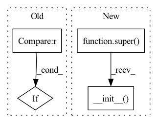

Pattern ID :1347
Before Change
self.bn_expand = nn.BatchNorm2d(out_channels)
self.shortcut = nn.Sequential()
if in_channels != out_channels :
self.shortcut.add_module("shortcut_conv", nn.Conv2d(
in_channels, out_channels, kernel_size=1, stride=stride, padding=0, bias=False))
self.shortcut.add_module(
"shortcut_bn", nn.BatchNorm2d(out_channels))After Change
expansion = 2
def __init__(self, in_planes, cardinality=32, bottleneck_width=4, stride=1):
super(Block, self).__init__()
group_width = cardinality * bottleneck_width
self.conv1 = nn.Conv2d(in_planes, group_width, kernel_size=1, bias=False)
self.bn1 = nn.BatchNorm2d(group_width)
self.conv2 = nn.Conv2d(group_width, group_width, kernel_size=3, stride=stride, padding=1, groups=cardinality, bias=False)In pattern: SUPERPATTERN
Frequency: 3
Non-data size: 4
Instances Fragment ID: 3520295
Project Name: tuttelikz/farabio
Commit Name: 1e781dfbb0f4b2a6cae790f04cab2d6c8a4074bc
Time: 2021-05-10
Author: s.askaruly@gmail.com
File Name: farabio/models/classification/arch/resnext.py
M Class Name: ResNeXtBottleneck
N Class Name: Block
M Method Name: __init__(5)
N Method Name: __init__(6)
M Parent Class: nn.Module
N Parent Class: nn.Module
M File Name: farabio/models/classification/arch/resnext.py
N File Name: farabio/models/classification/arch/resnext.py
M Start Line: 12
M End Line: 40
N Start Line: 14
N End Line: 31
Before Change
norm_layer: Optional[Callable[..., nn.Module]] = None
) -> None:
super(Bottleneck, self).__init__()
if norm_layer is None :
norm_layer = nn.BatchNorm2d
width = int(planes * (base_width / 64.)) * groups
// Both self.conv2 and self.downsample layers downsample the input when stride != 1
self.conv1 = conv1x1(inplanes, width)After Change
base_width: base number of channels in each group.
widen_factor: factor to reduce the input dimensionality before convolution.
super().__init__()
width_ratio = out_channels / (widen_factor * 64.)
D = cardinality * int(base_width * width_ratio)
self.conv_reduce = nn.Conv2d(
in_channels, D, kernel_size=1, stride=1, padding=0, bias=False) Fragment ID: 3520297
Project Name: ygzwqzd/lamda-ssl
Commit Name: 360768e49da2ff10157493a976817acc85f1ccd5
Time: 2022-01-17
Author: 1129198222@qq.com
File Name: Semi_sklearn/Network/ResNet.py
M Class Name: Bottleneck
N Class Name: ResNeXtBottleneck
M Method Name: __init__(7)
N Method Name: __init__(9)
M Parent Class: nn.Module
N Parent Class: nn.Module
M File Name: Semi_sklearn/Network/ResNet.py
N File Name: Semi_sklearn/Network/ResNet.py
M Start Line: 76
M End Line: 99
N Start Line: 31
N End Line: 68
Before Change
def __init__(self, method="encoder", dropout=0.1, alpha=0.5):
assert method in {"embed", "encoder", None}
self.method = method
if method in {None, "encoder"} :
self.dropout = nn.Dropout(dropout)
self.alpha = alpha
def encode(self, model, inputs):
After Change
method: embed, encoder分别表示在embedding和encoder层面做mixup, None表示mix后续处理
"""
def __init__(self, method="encoder", alpha=0.5):
super().__init__()
assert method in {"embed", "encoder", None}
self.method = method
self.alpha = alpha
Fragment ID: 3520296
Project Name: tongjilibo/bert4torch
Commit Name: 23d7b65fd7976c622005024c3ac07e1f729eb6ae
Time: 2022-07-22
Author: tongjilibo@163.com
File Name: bert4torch/layers.py
M Class Name: MixUp
N Class Name: MixUp
M Method Name: __init__(3)
N Method Name: __init__(4)
M Parent Class: nn.Module
N Parent Class: nn.Module
M File Name: bert4torch/layers.py
N File Name: bert4torch/layers.py
M Start Line: 1299
M End Line: 1304
N Start Line: 1300
N End Line: 1300